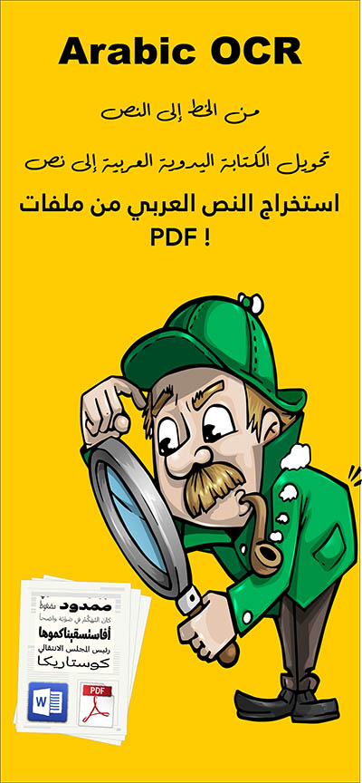

Optical Character Recognition (OCR) has been around for decades, but when it comes to the Arabic script, traditional methods have consistently fallen short. Today, thanks to Generative AI, LLM Vision, and advanced Machine Learning models, Arabic OCR has finally achieved near-human accuracy.
Why is Arabic OCR So Difficult?
Unlike Latin-based languages where letters are distinctly separated, Arabic presents unique challenges for standard OCR software. A deep understanding of the script is required to accurately digitize it.
- Cursive Nature: Arabic is inherently cursive. Letters connect to each other contextually (initial, medial, final, or isolated). Breaking a word down into individual characters (segmentation) is incredibly complex.
- Diacritics and Dots: The Arabic alphabet heavily relies on dots (I'jam) and diacritics (Tashkeel) placed above or below letters. Missing a single dot changes a 'B' (ب) to a 'T' (ت) or 'Th' (ث), entirely altering the meaning.
- Ligatures: Certain character combinations merge into entirely new shapes (ligatures), such as the "Lam-Alef" (لا).
- Complex Layouts: Historic texts, poetry, and newspapers often use multi-column layouts, overlapping text, and varied calligraphic font styles (Naskh, Kufi, Ruq'ah) that confuse traditional grid-based parsers.
The Shift from Traditional OCR to AI-Powered Vision LLMs
For years, Arabic OCR relied on rule-based engines (like Tesseract). While functional for clean, high-resolution, modern printed text, they struggled immensely with handwriting, low-resolution scans, or stylistic fonts.
The paradigm shifted with the introduction of Vision-Language Models (VLMs) and neural network-based image processing. Instead of trying to identify individual letters via pixel matching, modern systems (like Google Cloud Vision and Apple Intelligence) 'read' the text contextually.
How AI Contextualizes Arabic Text
Modern AI OCR doesn't just look at the image; it predicts what the text *should* say based on its language model. If an ink smudge obscures a letter, the Large Language Model (LLM) understands the surrounding Arabic syntax and grammatically predicts the missing letter with astonishing accuracy. This is why tools like our Arabic OCR app can effortlessly handle messy handwriting.
Apple Intelligence & On-Device Processing
One of the biggest concerns with processing sensitive documents (legal contracts, medical records, personal diaries) is privacy. Sending images to a cloud server poses inherent risks.
With the release of iOS 18/macOS 15 and Apple Intelligence, the game changed. By leveraging the Neural Engine built into Apple Silicon, high-accuracy LLM Vision operates entirely on-device. Our macOS and iOS implementations of Arabic OCR process the images directly on your local hardware. No internet connection is required, zero data leaves your device, and the results are instantaneous.
How to Maximize Arabic OCR Accuracy (Best Practices)
Even with advanced AI, the quality of your input significantly impacts the output. Here are professional tips to get the best results:
- Lighting is Everything: When snapping photos of documents, ensure bright, even, natural light to avoid harsh shadows over the text.
- Flatten the Curve: Try to keep the page as flat as possible. Warped text from the bindings of thick books can trick the spatial alignment algorithms.
- Contrast: High contrast between the ink and the paper yields the best results. If scanning faded historical documents, adjusting the contrast before uploading can help.
- Use High Resolution: While AI handles low-res better than ever, scanning at 300 DPI or higher gives the engine the crisp edges it needs to distinguish tricky dotted characters.
Post-Processing: AI Summarization and Formatting
Extracting text is just the first step. Generative Engine Optimization inside the app allows for immediate Post-Processing. Once the raw Arabic text is extracted, our built-in LLMs can:
- Automatically clean up formatting and remove line-break errors common in PDF extraction.
- Translate the Arabic text contextually into English or French.
- Generate a concise bullet-point summary of a lengthy Arabic document.
Conclusion
The era of frustratingly inaccurate Arabic text extraction is over. By combining the power of Vision LLMs, cloud computing, and secure on-device neural processing, digitizing Arabic archives, translating business documents, and deciphering handwritten notes is now a seamless experience.
Ready to try the future of Arabic OCR?
Experience cutting-edge AI extraction locally on your device or via our online portal.